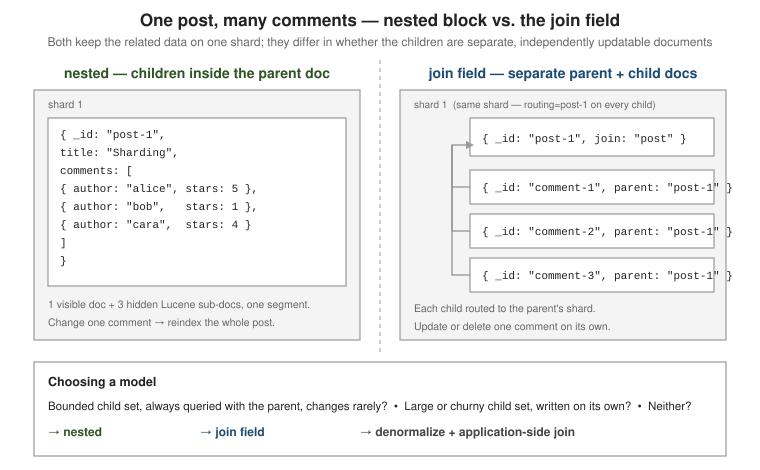

Joins & relationships
|
This content was generated with the assistance of AI and should be verified against the official documentation before being relied on in production. |
Elasticsearch stores each document as a flat set of fields and has no server-side join across
documents the way SQL does. When data is one-to-many or many-to-many you choose one of four models — plain object fields, nested, the join field, or denormalization — each trading query power
against write cost and how well it scales.
Elasticsearch is flat by default
Internally every document is flattened to field.subfield paths, and an array of objects flattens
field by field: comments.author becomes one list, comments.stars another, and the link between a
given author and that author’s star rating is lost. The models below differ in what they do about
that:
| Model | Use it when |
|---|---|
|
one-to-one data, or an array of objects where correlation between the sub-fields does not matter |
|
an array of objects you must query with its fields correlated; the child set is bounded and rarely changes |
|
parent and children are queried and updated independently; the child set is large or churny; both fit on one shard |
denormalize |
the default at scale — copy the fields you filter and aggregate on into each document and join in the application |
A fifth, lighter option — terms lookup — fetches an array of values from one document and uses
it as a terms filter against another index: a read-time join with no mapping change.

For the modelling trade-off behind this choice — embed vs. reference — see SQL Relations, MongoDB Schema Design and Couchbase Data Modeling rather than a re-statement here.
Object fields and lost array correlation
An object field needs no declaration — any JSON object is mapped as one by default (see
Object field type).
Querying two sub-fields of an object array together matches if different array elements satisfy
each clause:
PUT /blog
{
"mappings": {
"properties": {
"title": { "type": "text" },
"comments": {
"properties": {
"author": { "type": "keyword" },
"stars": { "type": "integer" }
}
}
}
}
}
PUT /blog/_doc/1
{
"title": "Sharding",
"comments": [
{ "author": "alice", "stars": 5 },
{ "author": "bob", "stars": 1 }
]
}
# Internally comments.author = ["alice","bob"], comments.stars = [5,1].
# This matches doc 1 even though bob gave 1 star, not 5 -- the per-element
# link is gone. Use "nested" when that link must hold.
GET /blog/_search
{
"query": {
"bool": {
"must": [
{ "term": { "comments.author": "bob" } },
{ "term": { "comments.stars": 5 } }
]
}
}
}The flattened type is the opposite extreme: it maps an entire object — keys and all — as a
single field of keywords, which suits objects with many or unknown keys (labels, arbitrary metadata)
at the cost of no analysis, no numeric or date handling, and only exact-term queries. See
Flattened field type.
PUT /events
{ "mappings": { "properties": { "labels": { "type": "flattened" } } } }
PUT /events/_doc/1
{ "labels": { "env": "prod", "team": "search", "region": "eu" } }
GET /events/_search
{ "query": { "term": { "labels.team": "search" } } }Nested fields
Mapping a field as nested makes Elasticsearch index each object in the array as a hidden Lucene
document on the same shard as its parent, so the sub-fields of one element stay together. See
Nested field type.
PUT /blog-nested
{
"mappings": {
"properties": {
"title": { "type": "text" },
"comments": {
"type": "nested",
"properties": {
"author": { "type": "keyword" },
"stars": { "type": "integer" },
"text": { "type": "text" }
}
}
}
}
}
PUT /blog-nested/_doc/1
{
"title": "Sharding",
"comments": [
{ "author": "alice", "stars": 5, "text": "clear and useful" },
{ "author": "bob", "stars": 1, "text": "too short" }
]
}A nested query steps into that scope; the clauses inside it must all match the same
sub-document, and inner_hits reports which one(s) did. See
Nested query
and
Retrieve inner hits.
GET /blog-nested/_search
{
"query": {
"nested": {
"path": "comments",
"query": {
"bool": {
"must": [
{ "term": { "comments.author": "bob" } },
{ "match": { "comments.stars": 5 } }
]
}
},
"inner_hits": { "size": 3 }
}
}
}
# => 0 hits: no single comment is by bob AND worth 5 stars.Aggregations must also cross into nested scope explicitly, with a nested aggregation. See
Nested aggregation
and Aggregations.
GET /blog-nested/_search
{
"size": 0,
"aggs": {
"comments": {
"nested": { "path": "comments" },
"aggs": { "avg_stars": { "avg": { "field": "comments.stars" } } }
}
}
}Cost:
-
Each nested value is a separate Lucene document, so a post with 100 comments indexes as 101 documents.
index.mapping.nested_objects.limit(default 10000) caps the total per document. -
Updating one comment reindexes the whole parent document — nested children are not addressable on their own.
-
A nested field is invisible to an ordinary query,
sort, or aggregation; every access must go throughnested/inner_hits.
The join field
A join field defines named parent/child relations within one index; every document carries the
field to say which side it is on. This replaces the _parent field removed after 2.x — there is no
separate parent type or index. See
Join field type
and
Joining queries.
PUT /blog-join
{
"mappings": {
"properties": {
"title": { "type": "text" },
"text": { "type": "text" },
"post_comment": {
"type": "join",
"relations": { "post": "comment" }
}
}
}
}A parent and all of its children must live on the same shard, so every child write is routed with
routing=<parent id> (the parent’s own _id is its default routing value). See
Cluster, nodes & shards and
Indexing: CRUD & bulk for routing.
# Parent.
PUT /blog-join/_doc/post-1?refresh
{ "title": "Sharding", "post_comment": "post" }
# Child: name the relation and its parent, and route to the parent's shard.
PUT /blog-join/_doc/comment-1?routing=post-1&refresh
{ "text": "clear and useful", "post_comment": { "name": "comment", "parent": "post-1" } }
PUT /blog-join/_doc/comment-2?routing=post-1&refresh
{ "text": "too short", "post_comment": { "name": "comment", "parent": "post-1" } }has_child finds parents by their children, has_parent finds children by their parent, and
parent_id is the cheap direct lookup of one parent’s children. See
has_child,
has_parent
and
parent_id query.
# Posts that have a matching comment; inner_hits returns the comments.
GET /blog-join/_search
{
"query": {
"has_child": {
"type": "comment",
"query": { "match": { "text": "useful" } },
"inner_hits": {}
}
}
}
# Comments whose parent post matches.
GET /blog-join/_search
{
"query": {
"has_parent": {
"parent_type": "post",
"query": { "match": { "title": "sharding" } }
}
}
}
# All comments of one known parent -- direct, no join evaluation.
GET /blog-join/_search
{ "query": { "parent_id": { "type": "comment", "id": "post-1" } } }Cost and constraints:
-
One
joinfield per index. A parent may have several child relations ("post": ["comment", "vote"]) and you can chain grandchildren, but each extra level multiplies query cost. -
has_child/has_parentjoin at query time by loading the join field’s global ordinals into heap on first use after a refresh; seteager_global_ordinalson the join field to pay that at refresh instead (see eager_global_ordinals). They are markedly slower thannestedand do not suit high query rates — covered further in Performance tuning. -
Get, update and delete of a child all need its
routingvalue. -
The payoff: parent and child documents are indexed, updated and deleted independently.
Terms lookup: a read-time join
A terms query can read its list of values from a field of another document instead of an inline
array, which joins two independently-written data sets at query time with no mapping change. See
Terms lookup
and Term-level queries.
# follows/1 lists the authors user 1 follows.
PUT /follows/_doc/1
{ "following": ["alice", "cara", "dan"] }
# Fetch that array with one internal GET by id and filter posts with it.
GET /posts/_search
{
"query": {
"terms": {
"author": { "index": "follows", "id": "1", "path": "following" }
}
}
}The lookup document is fetched in realtime by id (supply its routing if it has one), and the
resolved list is still bound by index.max_terms_count (default 65536), so keep the referenced
array modest.
Denormalize and join in the application
At scale the recommended model is to denormalize: copy the handful of fields you filter, sort or
aggregate on into each document, accept the duplication, and reconcile copies with a background job
or _update_by_query when the source changes. For genuine ad-hoc joins over large data sets, run
two queries from the application and intersect the id sets there, or reshape the data so the join is
unnecessary.
# Each post carries the author's name, not just an id -- no lookup at query time.
PUT /posts/_doc/1
{ "title": "Sharding", "author_id": "u1", "author_name": "Ada Lovelace" }
# Author renamed: fix every denormalized copy in one pass.
POST /posts/_update_by_query
{
"query": { "term": { "author_id": "u1" } },
"script": { "source": "ctx._source.author_name = params.name", "params": { "name": "Ada L." } }
}Elasticsearch has no cross-document or cross-index transactions, so a source document and its
denormalized copies can be briefly inconsistent while such a pass runs — contrast
MongoDB transactions. See also
Mapping & field types for the object,
nested and flattened mappings.